Technical overview, prepared for Mecka AI
Whole-body teleoperation on real work, recorded as data model teams can train on
We have demonstrated whole-body teleoperation on Luna and connected business systems at three U.S. customer sites. We are preparing our first field deployment, and we are open to proposals on how to work together.
What a record lets you decide
Which correction should a policy learn from?
During a glass-wiping policy run on Luna, the operator pressed the correction control several times. On video the inputs look alike. On one timeline with tool force, they do not.
Wrist camera, input A
Tool pressure fell during the outward pull
This is the review we want to run with your buyers. Agree what the policy should learn in a task, then keep the segments that teach it and set aside the ones that do not.
Luna lab run, glass-wiping policy, corrections through a pen controller. Wrist video, operator input and tool force share one clock. Force is the component normal to the glass, 20 ms mean.
How the system works
Three flows, one system
A task arrives from the customer’s business. A person or a policy turns it into whole-body motion. The run becomes a record. Mecka can connect at three points.
One workflow, end to end
A food manufacturer: from the ERP order to the pallet
Luna is one station in the line. We design the whole flow and connect it to the customer’s systems.
 Packing station
Packing station
Counted once. If the headset retries a confirmation after a dropped connection, the item is counted once. A late message from the previous task cannot close the next task’s recording.
Why Luna takes this station. Packing to order is where the product mix changes every day: rigid boxes, soft bags, different counts per carton. It needs two hands and judgement at contact. That is where a teleoperated robot earns its place, and where the data is richest.
Why the rest goes to other machines. Sealing, palletizing and pallet moves repeat without variation. Machines built for them are faster and cheaper, so we integrate them and let one dispatch layer run the line.
What the planning model settled. How close must the feed table sit for Luna to reach incoming product and place it over the carton rim? We check the pick and place poses with Luna’s own kinematics, then replay example orders through packing, sealing and pallet transfer to see where work queues.
How a station goes live
- Observe a full shift; map stations, hand-offs and exceptions
- Connect ERP, order and material systems
- Define what counts as a finished task
- Check the address for fiber, wired broadband and cellular
- Choose the main link; our dual 5G covers the rest
- Test on the deployment hardware before go-live
- Rebuild the floor 1:1 and check reach with Luna’s kinematics
- Cycle time per station against the customer’s takt
- On site, measured station times replace the planning assumptions
- Install the network and integrate systems
- Measure the link at the station
- Measure each machine’s cycle time, then start trial runs
- Operators work beside the robot for the first weeks
- Differences from the design are fixed on the spot
- Operators move to the remote cockpit shift by shift
Target before operators go remote: tasks completed by teleoperation without help from on-site staff. A task counts when the order leaves the station packed and handed to sealing.
Network design in detail
Customer networks are busy and can be unstable, so robot traffic runs on our own link. The customer’s network carries only light task-data calls.
| Operator intent | Must be fresh. Sent on both links and de-duplicated on arrival. |
| Operator video | Must stay watchable. Main link, with error correction and adaptive bitrate; fails over to the second link. |
| Training records | Must be complete. Written on the robot first, then uploaded and verified on their own schedule. |
- Two industrial 5G gateways with external antennas, on two carriers.
- Motion checks stay on the robot, whatever the link is doing.
- Design targets: 30 Mbps of operator video; one-way command latency under 60 ms at the 99th percentile.
- We qualify the link at the workstation, under video load, including ten minutes at 30 Mbps in the evening peak.
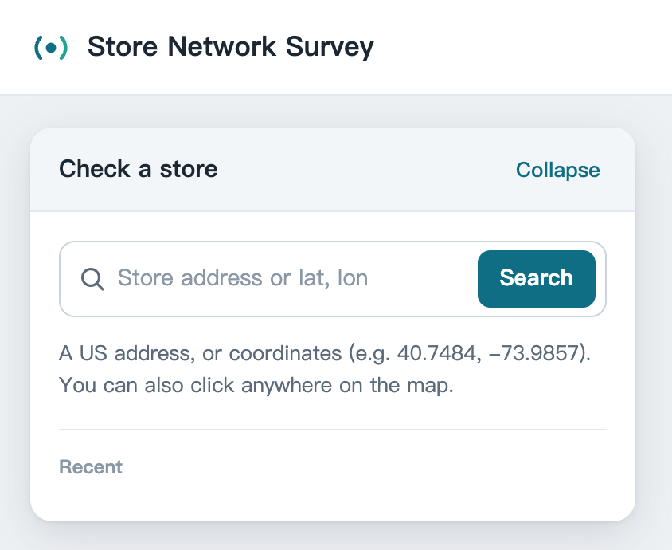
Choosing the body
The work should shape the robot
Much of today’s hardware starts from the human form and asks the site to adapt around it. We work backward from the site: observe a shift, break the workflow into actions, and ask what each action demands of a body.
Two jobs, both called packing
 Takeout packing in a restaurant kitchen
Takeout packing in a restaurant kitchen Order picking and packing in grocery retail
Order picking and packing in grocery retail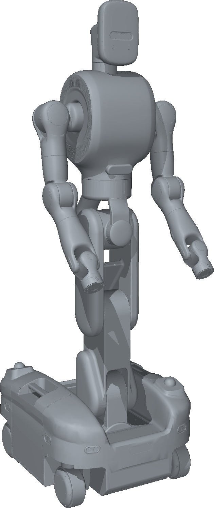
The map so far
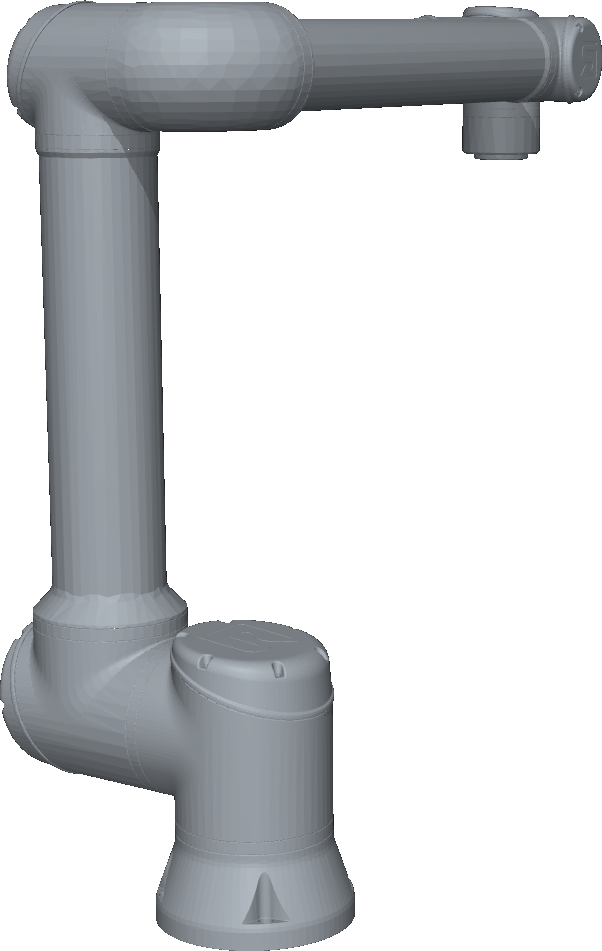
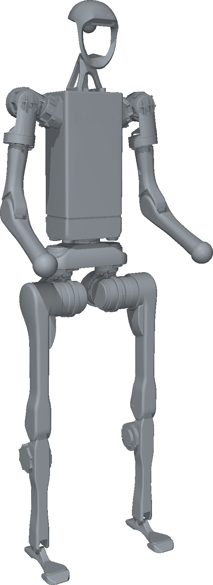
Across many sites, requirements that keep recurring tell us which designs can serve a whole class of workflows, and which features the next generation of hardware needs. We are building that into a map: from site to workflow to single action, and from each action to the capabilities and the data it requires.
For Mecka, the map turns “whole-body data” into a concrete choice. A shelf pick calls for coordinated base, torso and arm motion. A route with stairs adds foot placement and balance. A bench task calls for fingertip contact at a fixed pose.
Teleoperation
Whole-body control can close the embodiment gap
Egocentric human data records how people use the degrees of freedom of their own bodies to get work done in space. A robot has a different body.
A person steps closer, leans over a carton, steadies it with one hand and packs with the other. Luna reaches the same result with a wheeled base, a lifting torso and two seven-axis arms. To carry human skill across, the controller has to preserve what the person intended and let the robot achieve it in its own way.
We believe a holistic whole-body controller can close this gap by aligning human intent with robot intent. Our whole-body teleoperation system coordinates Luna’s mobile base, torso, head and both arms as the operator moves. Our research goal is to transfer skills directly from human egocentric demonstrations to robot embodiments, so the same human data is worth more for both policy training and deployment. We have not yet tested that transfer on Luna.
Who builds which part of the control chain
Leaning is not reaching
- Two motions, told apart. When the operator leans forward and reaches into a carton, we distinguish torso motion from the hand’s movement relative to the shoulder. The first moves Luna’s torso and base. The second sets where Luna’s hand should go.
- No jump when control changes hands. When the operator takes over, control resumes from Luna’s current hand target.
- Checked on the robot. Every command passes joint, self-collision and workspace limits on Luna before anything moves.
What you can verify. Operator input, the motion we commanded and the motion Luna measured are recorded on one clock. A reviewer can replay how a human movement became a robot movement.
What the robot needs before it works a shift
Vision
A wide-angle stereo camera on the head gives the operator depth and peripheral view. Wrist cameras cover close work. Every view feeds both the operator and the recorder.
Virtual walls
Lidar limits the base’s motion toward detected obstacles while allowing it to move alongside them. Arm walls bound where each arm may go. Self-collision, joint and workspace limits sit below any operator or policy command.
Video stream
When the operator turns, Luna’s head and the video arrive a moment later. We pair each stereo frame with the camera pose at capture and redraw it for the operator’s current head pose, so the shelf stays still in view. One encoded stream feeds the headset, a copy feeds the recorder.
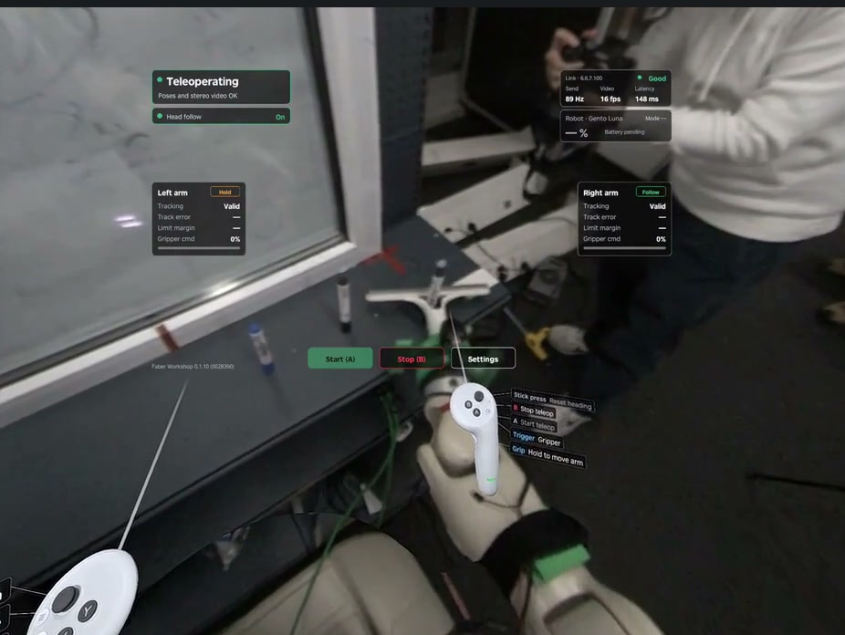
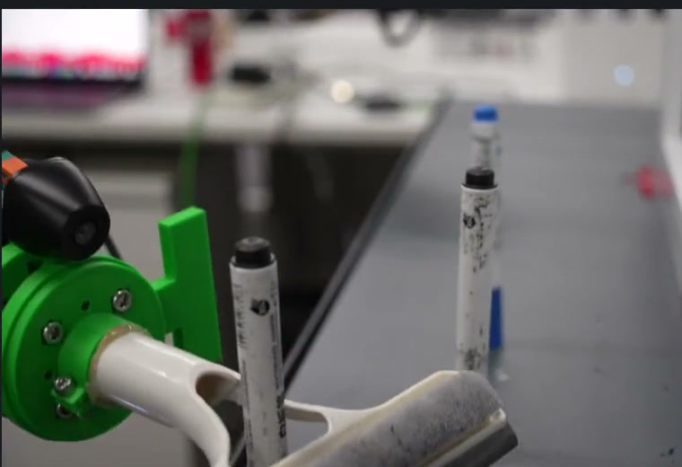
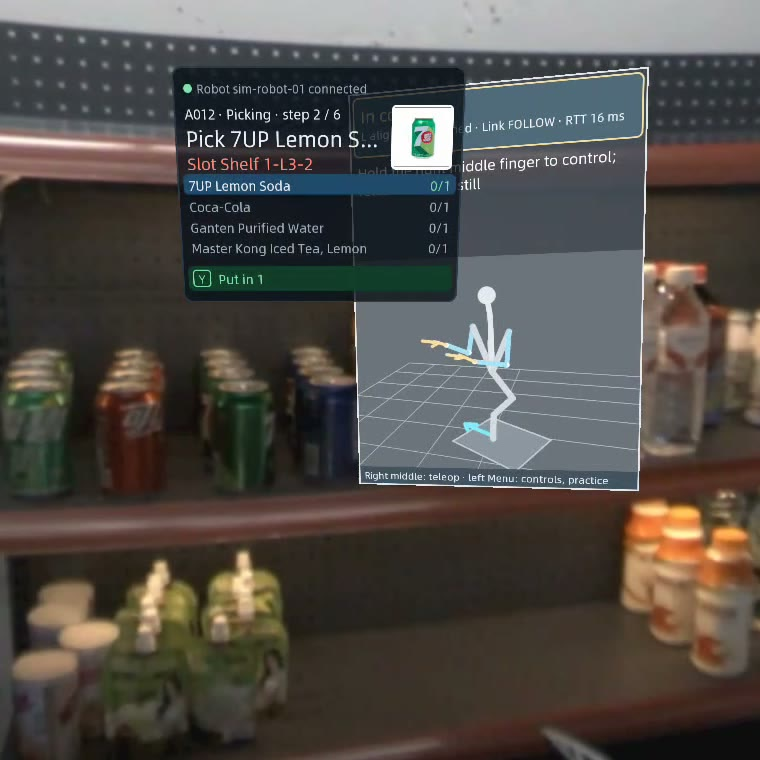
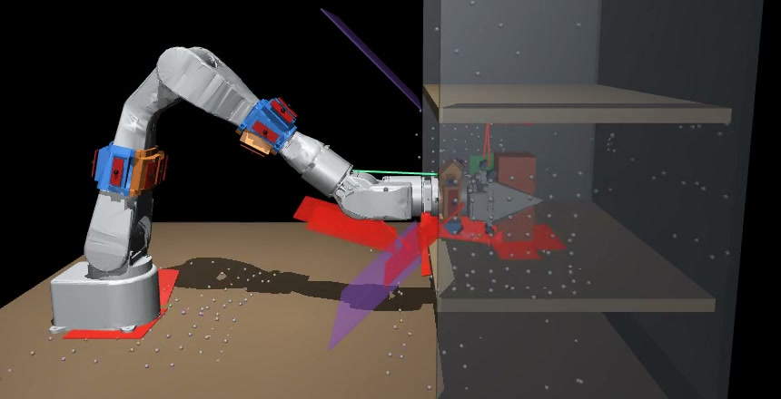
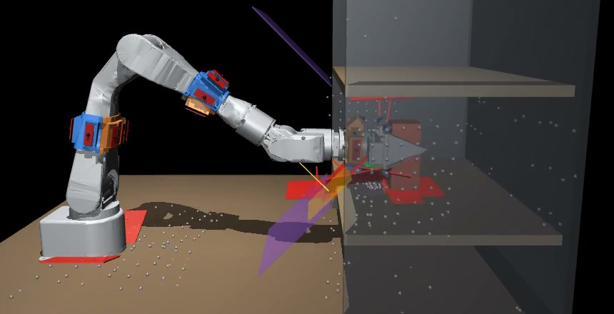
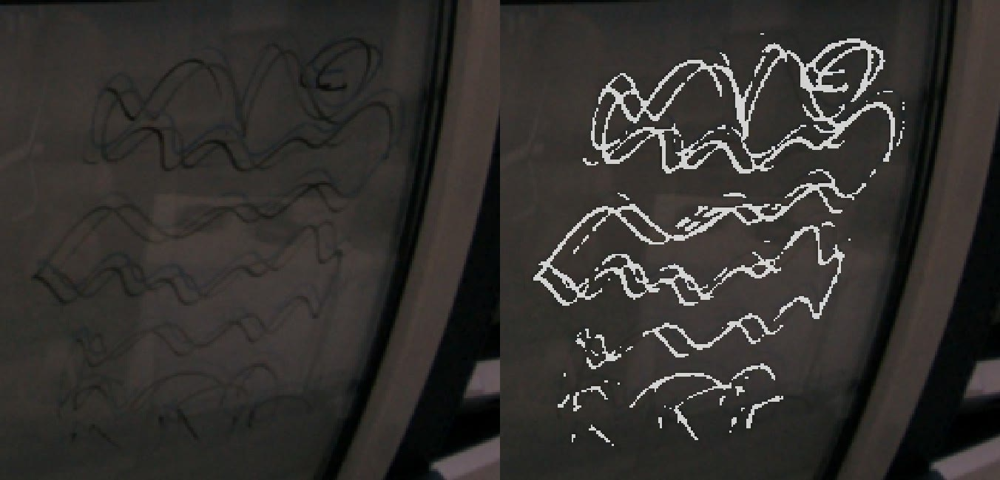
Task vision: knowing when the job is done
After a wipe, a frame can look clean and still carry marker strokes. If every final frame were labelled clean, a policy would learn to ignore residue.
- We build a reference from several demonstrations and separate strokes, the tool and clear glass.
- Where the blade covers the glass, the judgement waits until that area is visible again.
For packing, the same approach gives outcome labels a buyer can rely on: in the carton, hidden by the hand, or not decidable.
Running a learned policy, with a person in the loop
The same input in training and on the robot
Before running the wiping policy on Luna, we replayed the same wrist frames through the training path and the deployment path and compared, frame by frame, what the model received.
Only timely actions run
A policy predicts a stretch of future motion. By the time inference returns, part of it is already in the past. The runner executes only the part that is still on time.
Three traces per run
What the policy asked for, what the operator added and where the tool actually went are recorded separately. That is what makes a single correction reviewable on its own.
Operating from a distance
- Latency. The fast loops stay on the robot. The operator sends intent; force control and motion checks run on the robot and do not wait on the network.
- Monitoring. Live video and robot status in a browser, with heartbeat alarms.
- Correction. While a policy runs, the operator can adjust its motion in real time without stopping it.
- Takeover and hand-back. Hold to take over, release to hold position, and return to the pose before takeover in one action.
- If the link drops. The robot stops or holds, and resumes only after a state check and operator confirmation.
We have run teleoperation over the public internet from our own lab.
Force and touch
Why we build force feedback
Even a simple pick-and-place draws on rich physical perception.
The moment a person grasps an object, sight and touch give a read in four dimensions: its shape, its size, how hard it is, and how it changes under the hand. You know how much force to use and how to hold it steady. When it starts to slip, you tighten your grip before it falls.
A remote operator has none of that unless the system sends it back. So we build the hardware that does, and we record the same contact signals alongside the motion.
For the operator: cleaner demonstrations
With contact cues in the hand there is less guesswork at the moment of contact. We expect faster and more accurate motion, less overshoot and fewer corrections.
For the model: the contact itself
We record the contact signals on one clock with what the robot did, how the operator adjusted and what happened to the object. A model team can then study the physics of a grasp, and a reviewer can tell a useful correction from an empty one, as in the glass example above.
The hardware we build for it
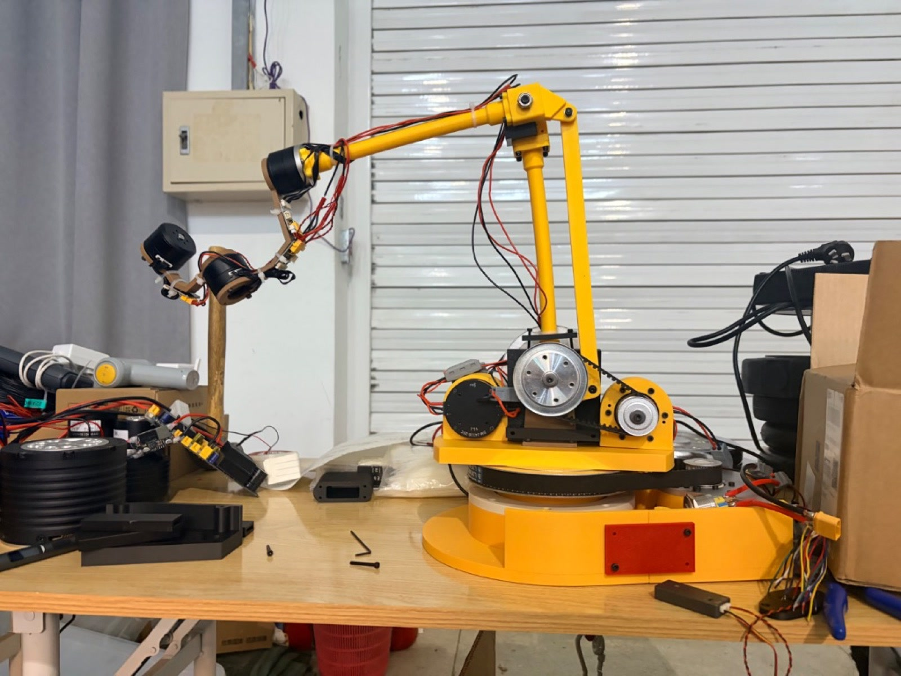
6-DoF force-feedback master armQuasi-direct-drive base, parallel-link shoulder and elbow, three-axis wrist. Returns contact force to the operator’s wrist. Run with Luna.
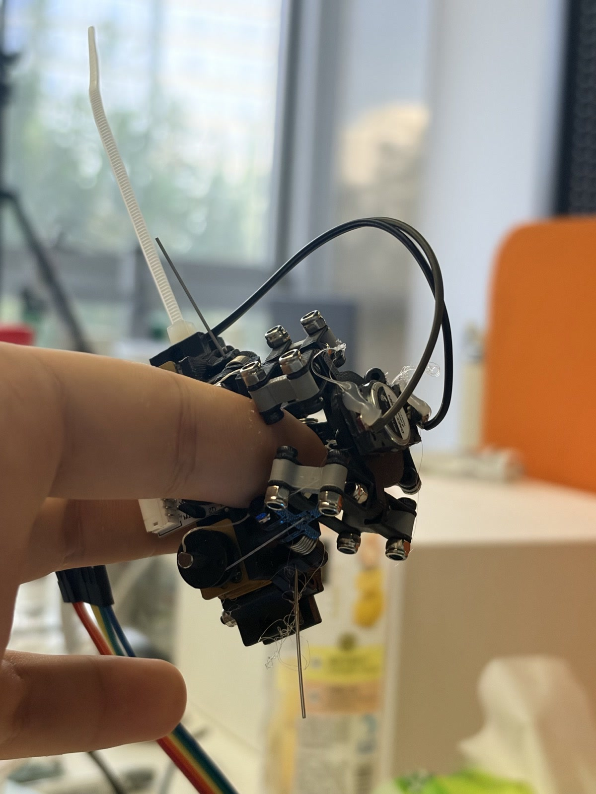
Fingertip tactile displayA three-chain parallel linkage presses on the finger pad for normal force; a voice coil plays back the vibration of slip and texture.
Bilateral force-feedback gripperThe operator’s trigger sets the opening and feels the grip force. Vibration picked up at the gripper’s fingertip is replayed through a voice coil in the trigger.
A tactile signal has to be traceable to a finger
A tactile array can have the right shape and stable values and still be attributed to the wrong place. A dataset built on it would teach a model the wrong physics.
- On our fingertip-array bench, each fingertip carries 52 sensing points, each reading force on three axes.
- We press each fingertip on its own and confirm that every channel answers to the finger it belongs to.
What you can verify. Each tactile sample names the physical sensor that produced it, in raw sensor units, separately from any calibration to newtons.
Our tactile scaling hypothesis
We believe tactile grasp data follows a scaling law. Our hypothesis is that grasping roughly four million distinct SKUs, with vision, touch and action recorded in sync, could give models a foundation for 4D perception and scene flow.
We want a model to learn how an object’s 3D shape and position change over time under contact, how a grip affects its motion or deformation, and when a change in force prevents a slip. We would measure progress on products the model has never handled.
Data system
From one run to a dataset you can trace
S7 is the system that sits between our robots and everyone who uses what they record. It is built as an hourglass: many consumers above, many robot bodies below, and one narrow contract between them.
What the narrow waist buys you
Luna or another robot, a clip has the same layout: video, time series, a manifest and a provenance record. Only a thin bridge to the maker’s SDK is new.
Raw clips are append-only. A dataset is a released list of clips that never changes. Each derived file records its inputs, the program version that produced it and its checksums.
Every sample carries a sequence number, a monotonic clock and a wall clock. Intervals where the wall clock jumped are flagged; dropped frames are counted from gaps in the sequence.
Real-time control and safety run on the robot, beside the maker’s SDK. The network carries tasks, video and records.
From the robot to your pipeline
Three records, each proving a different link
Recording check on Luna
Plus measured joint streams and the software versions that produced them. The two cameras sample at different rates, so a buyer checks coverage by source time, not by nominal frame rate.
Glass-wiping policy run
Policy request, operator input, measured motion and tool force on one clock. This is the run at the top of the page.
Whole-body packing record
- Base, torso, both arms and gripper: commanded and measured
- Head and wrist video
- Order, SKU, quantity, body and gripper
- Grip force and fingertip contact
- Outcome: placed, re-grasped, slipped, damaged
- For 4D perception and scene flow: an agreed way to track each object’s 3D motion or deformation
Where we are going
We are going on site, and we are open to proposals
Our aim is simple: put a large number of robots to work in real businesses. We are looking for partnership and collaboration proposals from teams who want to build toward that with us.
Our plan
Luna at a customer workstation, run by our operators from the first day, with every run recorded.
Capable, affordable robots brought on site with teleoperation at scale. Models take over task by task as the data from those sites comes in.
A body we design ourselves, worked out from what the sites require: the reach, payload, footprint and contact each workflow asks for.
What would help us move faster
Operators
Good teleoperators. Every site starts with people running the robot, and their skill sets the quality of both the work and the data.
Engineers
For the data pipeline, software integration and hardware integration. Hardware integration is where extra hands help most.
More robots
Some on site, working and recording. Others in the lab for development and regression testing, so a change is proven before it reaches a customer.
Resources to finish our hardware
Our operator-side haptic controller, and add-ons on the robot such as spatial obstacle sensing.
Places a collaboration could start
These are starting points. We are open on the form a partnership takes.
A first step. Could you bring one task a buyer is training for and one example they would accept? We can use those to scope a first collection together.
We are deploying either way, and we would rather do it with the right partners. Tell us what you are building toward, and we will show you where our deployments can carry it.